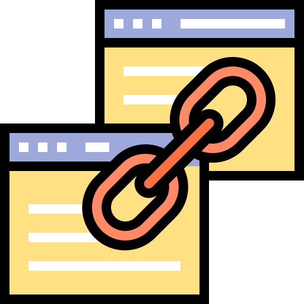
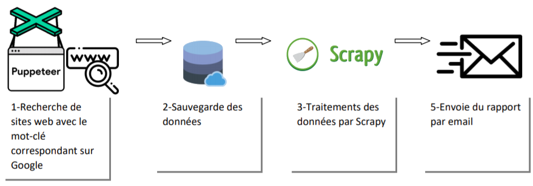
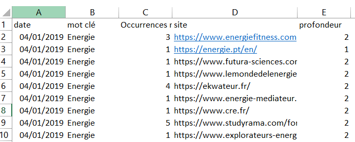

Recherche de back linck
Le projet Backlinks SEO est un projet Recherche & Développement (Recherche et développement) réaliser lors de mon stage pour l'obtention de mon bachelor à Jechange.fr entre août 2018 et Février 2019.
AUTONOMIE GESTION DE PROJET PYTHON COMMUNICATION R&D TECHNIQUE
Le projet
Le projet Backlinks SEO est un projet Recherche & Développement (Recherche et développement) réaliser lors de mon stage pour l’obtention de mon bachelor à Jechange.fr entre août 2018 et février 2019. Jechange.fr est une scale-up française leader et pionnière dans le secteur de la gestion et l’optimisation des factures courantes,il incorpore aussi un service gratuit d’aide au déménagement.
Le projet s’inscrivait dans une démarche d’amélioration continue du référencement web du site jechange.fr , celui-ci a été réaliser avec Scrapy et Puppeteer .
Contexte
Face à une concurrence accrue lors des 10 dernières années, Jechange.fr s’est vu perdre des places plus qu’importantes en termes de notoriété au profit de ses concurrents.
- Le responsable SEO (Search Engine Optimization) de l’entreprise souhaite positionner le site jechange.fr sur plusieurs mots-clés.
- Pour cela, il a besoin d’aller chercher un nombre de sites web en fonction du mot-clé passé en paramètre.
- La réputation, tout comme la position du site est aussi prise en compte, tout comme le nombre de backlink (lien sortant) de celui-ci.
Pour l’entreprise, l’enjeu et le risque principal étaient de voir la concurrence creuser l'écart en termes de notoriété. En ce qui me concerne, la cohérence du résultat attendu était le plus gros facteur quant à la réussite du projet.
Objectifs
Pour bien mener la mission, il était important de compléter les points suivants :
- Mettre à disposition un fichier de renseignement des mots clés ;
- Mettre à disposition un fichier contenant la liste des sites web à éviter ;
- Mettre à disposition le choix du paramétrage pour la profondeur de consultation des pages ;
- Fournir un rapport (réputation, nombre d’occurrences du mot clé, etc.) sur les potentiels sites partenaires ;
- Partage du rapport grâce à une liste de diffusion.
 Shéma explicatif
Ma contribution
Sur ce projet que j’ai mené en toute autonomie, j’avais une liberté complète sur le choix des technologies utilisaient ainsi que la gestion du planning.
Résultats
Création des modules
Après avoir mis en place l’environnement de développement dédié, il était nécessaire dans un premier temps les fichiers allant contenir les différentes informations (voir section Objectifs).
Illustration :
Fichiers
$ vi backlinksseo/modules/create_files/files_gen.py
f = open("list_site.txt", "w")
f.write(mysite)
f.close()
## Mettre en place une fonction de création automatique de fichier
try :
f = open("list_site.txt")
# Do something with the file
except IOError :
print("File not accessible")
finally :
f.close()
## Vérifier si le fichier existe
Scrapy Python
$ vi backlinksseo/.spiders/extrcat_backlinks.py
class MySpider(scrapy.Spider) :
name = 'myspider'
def start_requests(self) :
return [scrapy.FormRequest("monsite",
formdata={'mot_clé'},
callback=self.logged_in)]
def logged_in(self, response) :
extract_informations()
pass
…..
$ vi backlinksseo/.spiders/extrcat_backlinks.py
from scrapy.mail import MailSender
def send_rapport () :
mailer = MailSender()
mailer.send(to=["ma_liste_email"], subject="Rapport Backlinks", cc=["ma_liste_administrateurs", attachs="mon_rapport.xls"])
La mise en place des différents modules s'étant bien passé, j’ai pu rapidement valider les résultats par le responsable SEO, sans surprise, les premiers résultats correspondaient bien à ce qui était attendu.
 Résultat recherche backlinks
Conclusion
L’un des projets techniques les plus ambitieux que j’ai eus la chance de mener. Celui-ci comporte plusieurs particularités, en effet riche de son apport technique, entre la combinaison des différentes techniques citées en préambule et les espoirs placés dessus.
Étant sur la fin de mon stage à Jechange.fr lors de la réalisation du projet, j’ai dû partir sans avoir vu son utilisation.
Avec le recul, c’est sans aucun doute ce projet qui m’a aidé pour trouver ma vocation dans le monde de l’exploration de données, si bien que le sujet de mon alternance s’est entièrement orienté dessus, développeur BI (Business Intelligence) Big Data.